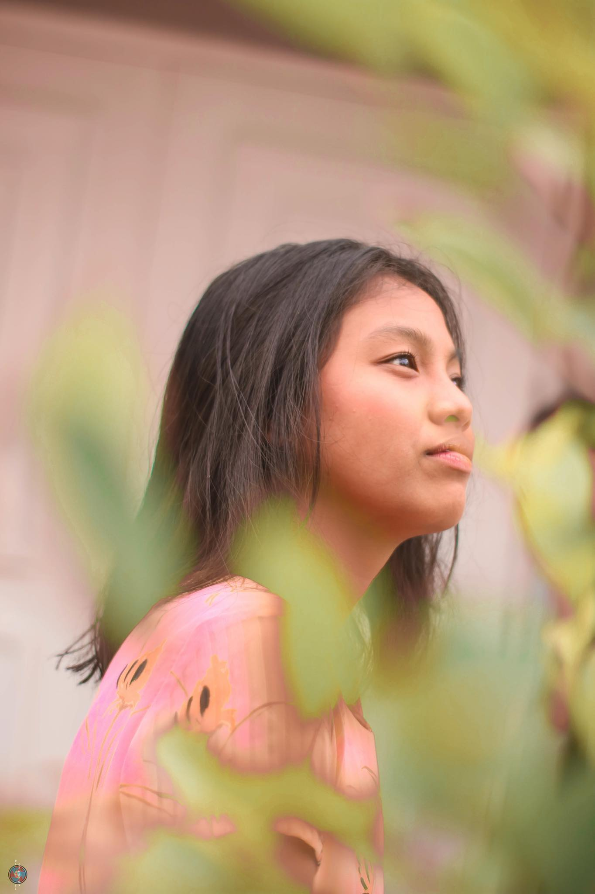

<!DOCTYPE html>
<html lang="en"></html>
<head>
    <meta charset="UTF-8">
    <meta name="viewport" content="width=device-width, initial-scale=1.0">
    <title>Welcome</title>
    <link rel="stylesheet" href="style.css">
</head>
<body style="background-color: #D2B48C;">
    <section id="about">
        <h1 class="headings">ABOUT ME</h1>
        <div id="pic">
            
            <div id="intro">
                <h2>Lineah Maeve D. Valenzuela</h2>
                <p>My name is Lineah Maeve D. Valenzuela, and I'm a college student at Adamson University. I have 3 siblings and I am the second eldest. I love photography, playing games, watching series, and sleeping. I have 3 dogs, and they are Ruffles, Yesha, and Sven. I took BSIT because it is the most practical course to take in college.
				My favorite movies are Spirited Away, Howl's Moving Castle, and Ponyo. My favorite series are Money Heist, Grey's Anatomy, Stranger Things, and Lucifer.
				</p>
				<br>
				<p>I love listening to music whenever I have a free time. I also spend my time playing Genshin Impact which is one of the most played game today. </p>
            </div>
        </div>
    </section>